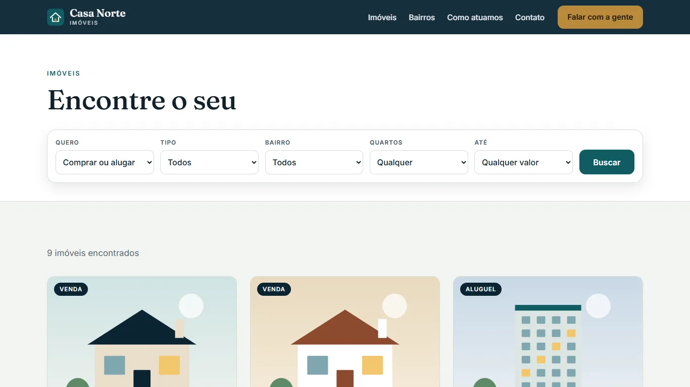

Casa Norte Imóveis
Tema WordPress próprio (PHP), feito do zero para uma imobiliária fictícia: imóveis como conteúdo, busca com filtros e formulário de interesse que guarda os contatos.
O que tem no tema
- Imóveis como conteúdoTipo de conteúdo Imóvel com taxonomias de tipo e bairro, preço, quartos, vagas, área e finalidade.
- Busca com filtrosConsulta por taxonomia e por campos numéricos tratada no servidor, com lista branca de parâmetros.
- Filtro ao vivoUm pouco de JavaScript aplica as mesmas regras no navegador, então a busca funciona até na demo estática.
- Contatos guardadosFormulário com nonce, campo isca e validação; cada contato vira um item privado no painel.
- theme.json e CustomizerCores, fontes locais e espaçamentos num lugar só; telefone, endereço e horário editáveis sem código.
- Celular em primeiro lugarFiltros em grade de duas colunas, contraste AA, foco visível e sem rolagem lateral em 390 px.
- PHP 8
- WordPress
- WP_Query
- tax_query / meta_query
- theme.json
- Customizer API
- CSS
Outra página do site

Como instalar
No painel do WordPress: Aparência, Temas, Adicionar novo, Enviar tema, e escolha o casa-norte.zip. O passo a passo, a estrutura de pastas, os testes e um Blueprint do WordPress Playground estão no README.